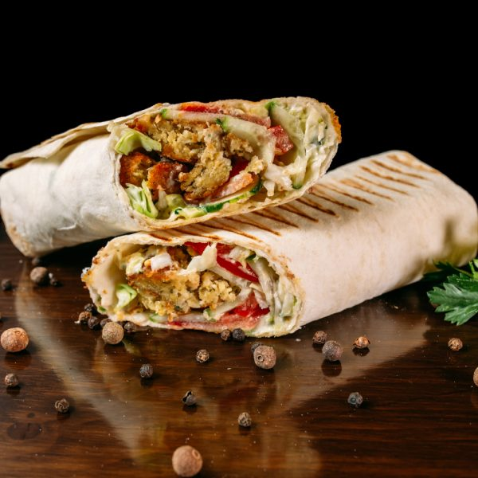
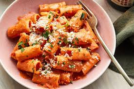

Pizza is a dish of Italian origin consisting of a usually round, flat base of leavened wheat-based dough
topped with tomatoes, cheese, and often various other ingredients, which is then baked at a high
temperature, traditionally in a wood-fired oven.
SHAWARMA

Shawarma is a popular Levantine Arab dish consisting of meat cut into thin slices, stacked in a cone-like
shape, and roasted on a slowly-turning vertical rotisserie or spit. Originally made with lamb, mutton or
chicken, today's shawarma may also be turkey
BURGER
A hamburger is a food, typically considered a sandwich, consisting of one or more cooked patties—usually
ground meat, typically beef—placed inside a sliced bread roll or bun. The patty may be pan fried,
grilled, smoked or flame broiled.
STEAK
A steak is a meat generally sliced across the muscle fibers, potentially including a bone. It is normally
grilled, though can also be pan-fried. Steak can also be cooked in sauce, such as in steak and kidney
pie, or minced and formed into patties
PASTA

Pasta is a type of food typically made from an unleavened dough of wheat flour mixed with water or eggs,
and formed into sheets or other shapes, then cooked by boiling or baking.
HOTDOG
A hot dog is a food consisting of a grilled or steamed sausage served in the slit of a partially sliced
bun. The term hot dog can also refer to the sausage itself. The sausage used is a wiener or a
frankfurter.
TACO
A taco is a traditional Mexican dish consisting of a small hand-sized corn or wheat tortilla topped with
a filling. The tortilla is then folded around the filling and eaten by hand
NACHOS
Nachos are a Mexican regional dish from northern Mexico that consists of heated tortilla chips or totopos
covered with melted cheese, often served as a snack or appetizer. More elaborate versions of the dish
include other ingredients
BURRITTO
A burrito is a dish in Mexican and Tex-Mex cuisine that took form in California cuisine, consisting of a
flour tortilla wrapped into a sealed cylindrical shape around various ingredients.